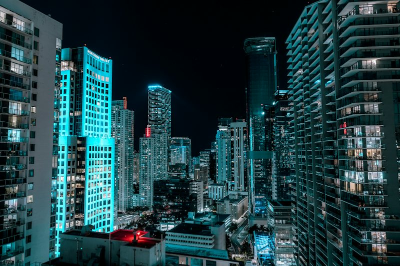

Bayside Marketplace
The giant observation wheel beside the arena in Trailer 2 is the one at Bayside Marketplace, 401 N Biscayne Boulevard in Downtown Miami. What makes the match solid is not the wheel itself, but the company it keeps: the arena to the south, the port cranes behind, and the I-395 ramps overhead, all in the same arrangement as the real city.

At a glance
- Address
- 401 N Biscayne Blvd, Miami, FL 33132
- Coordinates
- 25.7794, -80.186
- District
- Vice City
- Confidence
- Strong
- Where it is seen
- Trailer 2 (1:40)
How confident are we?
The wheel appears in the same frame as the arena and the port cranes, in the same relative positions as the real Bayside Marketplace.
Bayside Marketplace is a shopping and dining complex on the north side of Downtown Miami, built around the inlet where Biscayne Bay meets the Miami River. The observation wheel is on its waterfront side and turns slowly, visible from a long way up the boulevard.
Getting the frame
The trailer's composition works from the plaza on the arena side of Biscayne Boulevard, looking north with the wheel behind and the port cranes beyond it. From the street that is a five-minute walk, and it is one of the few places in the game where you can stand in one spot and line up three separate landmarks.
| Detail | The real thing |
|---|---|
| Address | 401 N Biscayne Blvd, Miami, FL 33132 |
| Coordinates | 25.77940, -80.18600 |
| In-game name | The observation wheel |
| District in game | Vice City |
| Adjacent | Kaseya Center, port cranes |
| Setting | Biscayne Bay inlet, Downtown |
What to actually look at
At ground level, the wheel is a working ride with ticketed cabins and good views over the bay at dusk. The waterfront walkway around the inlet is public and is a genuinely good place to stand, with the Miami River mouth on one side and the Downtown skyline on the other.
Two faces of the same downtown
The wheel sits at the north end of Downtown; the arena is a short walk south; the port is across the inlet. On foot the three are five minutes apart, which is why our Downtown stop is a single loop rather than a drive: you see the plaza, the wheel, the arena side and the waterfront in one walk.
Getting in and out of Downtown
Downtown Miami runs on a signed one-way grid, and Biscayne Boulevard is no exception: check the street blades before you pull out, and be prepared for the trip down to Brickell to take longer than the map suggests. Parking is priced by the hour and by the event, and the garages under the buildings are usually the least painful option on foot.
Where it sits on our route
The Downtown and Biscayne Boulevard stop on the Miami Vice City small-group tour covers all of it: the arena plaza, the wheel, the waterfront and the view down Biscayne Boulevard towards Brickell. The boat tour picks up the same skyline from the water, with the wheel and the cranes reflected in Biscayne Bay at sunset.
The wheel from the water
From Biscayne Bay the wheel is visible behind the arena, and the whole downtown cluster reads as one composition: the arena bowl in front, the wheel at its shoulder and the port cranes further back across the channel. That is the same angle the boat tour holds for the golden-hour stop, which is why the boat route gets the postcard and the land route gets the close-up.
Frequently asked questions
What is the observation wheel in GTA 6?
It is the wheel at Bayside Marketplace in Downtown Miami. It appears in Trailer 2 alongside the arena and the port cranes, in the same relative positions as the real landmarks.
Can you ride the wheel?
Yes, it is an operating attraction with ticketed gondolas. We do not include the ride in our tour price; we stop at the plaza for the photograph and the view.
Is it far from the tour route?
No. It is a few minutes' walk from the arena, and both are inside the Downtown stop on the small-group tour.
See it on a Leonida Tours route.
Bayside Marketplace is one of the stops we drive past every day. Join a small group and see it in person, with a local guide who knows what to look for.
See this on the tour


Unofficial tours. Leonida Tours is an independent tour company. Our tours are not affiliated with, endorsed, sponsored or licensed by any game publisher or their affiliates. All game titles, characters, place names and trademarks belong to their respective owners and are used here only to describe the real-world locations that inspired them. Every stop on our tours is a real, publicly accessible place. Photography via Unsplash.